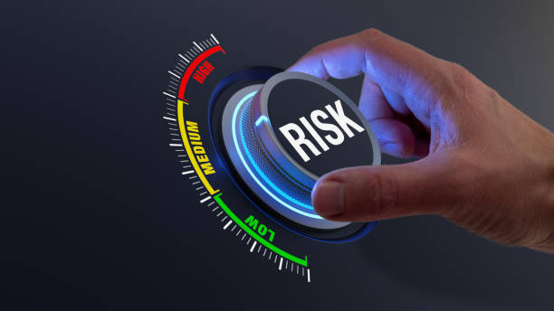

flavio@portfolio:~/veille$ tail -f veille.log
Veille technologiqueLa cybersécurité face à l'intelligence artificielle
Comment je reste informé des menaces, des innovations et des évolutions d'un domaine qui change chaque jour.

Ma démarche personnelle
La veille technologique est un processus continu qui consiste à rechercher, analyser et partager des informations sur les innovations, les menaces et les évolutions techniques d'un domaine précis.
Faire de la veille, ce n'est pas seulement lire quelques articles : c'est un travail structuré et méthodique, qui repose sur des sources fiables, des outils adaptés et une analyse régulière des données collectées.
Son objectif principal est de rester informé des nouveautés pour anticiper les changements, adapter ses compétences et prendre les bonnes décisions.

Enjeux de la cybersécurité
Une attaque peut coûter des millions d'euros
Données sensibles peuvent être divulguées
Cyberespace comme champ de bataille
Outils de ma veille
Agrégateur RSS centralisé
Alertes par mots-clés
RSS avec automatisations

Tendances majeures
Montée en puissance ciblant PME et collectivités
Défense et attaque amplifiées par l'IA
Modèle de sécurité en adoption croissante
Configurations erronées et accès mal protégés

Mots-clés et sources
Mots-clés
Sources principales
- The Hacker News
- CERT-FR / ANSSI
- BleepingComputer
- IT-Connect

Conclusion
La veille technologique en cybersécurité est devenue une habitude essentielle : c'est ma façon de rester à jour et de progresser dans ce domaine en constante évolution.
- Suivre l'actualité des menaces informatiques
- Développer curiosité et rigueur technique
- Mettre en place des outils professionnels
- Lier théorie et pratique efficacement
« Dans le monde de la cybersécurité, rester informé, c'est déjà se défendre. »